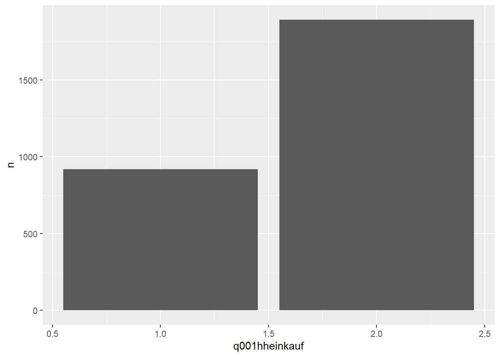

library(tidyverse)
survey <- read_csv("data/mds12_schoko_milch.csv")21 Umfragedaten
In diesem Projekt geht es um die Analyse eines Umfragedatensatzes. Umfragen sind ein praktisches Werkzeug, wenn wir etwas über Einstellungen, Präferenzen oder Verhalten von Menschen herausfinden wollen – und genau solche Datensätze begegnen euch später auch im Job ziemlich häufig.
Bevor wir loslegen, eine Leitfrage: Wenn ihr eine Tabelle mit hunderten Spalten vor euch habt – woher wisst ihr eigentlich, was ihr da seht? Was ist eine Zeile? Was ist eine Spalte? Und wie könnt ihr schnell prüfen, ob die Daten überhaupt korrekt in R angekommen sind? Genau darum geht es in diesem Abschnitt.
HinweisLernziele in diesem Abschnitt
- Wie lade ich einen Datensatz mit R?
- Welche Metainformationen (Kontext) sollte ich zu einem Datensatz kennen?
- Wie finde ich heraus, wie viele Beobachtungen und Variablen in den Daten stecken?
- Welche Werkzeuge helfen mir, Variablen schnell zu überblicken?
- Wie prüfe ich, welche Werte in einer Variable vorkommen?
21.1 Daten laden mit R
In jedem Projekt steht am Anfang das Laden der Daten. In diesem Buch gehen wir davon aus, dass ein Datensatz bereits erhoben wurde. Die Datenerhebung ist nicht direkt Bestandteil dieses Buches – es geht primär um die Datenanalyse.
Die Umfrageergebnisse wurden mit der Software Limesurvey erhoben und als CSV-Datei exportiert. Wenn ihr das GitHub-Repository für dieses Buch auf euren Rechner heruntergeladen habt, dann liegen die Daten im Ordner /data und können so geladen werden:
WarnungAchtet auf den Unterstrich
Bitte achtet auf die Verwendung der richtigen Funktion read_csv. Es gibt in R auch eine Funktion mit dem Namen read.csv, die sehr ähnlich ist, aber keinen Tibble erzeugt. Wir verwenden in diesem Buch durchgehend das Tidyverse und Tibbles.
Nach Ausführung des Codeblocks stehen die Daten auf dem Objekt survey als Tibble bereit. Es ist eine gute Idee, für häufig verwendete Objekte kurze, aber sprechende Namen zu wählen – survey ist hier ein guter Kompromiss.
Zum Laden der Daten gehört immer auch ein kurzer Reality-Check: Sind wirklich alle Beobachtungen (Zeilen) und Variablen (Spalten) da? Genau diese Frage beantworten wir im nächsten Abschnitt.
HinweisMehr zum Laden von Daten laden (auch weitere Formate)
An dieser Stelle gehen wir nicht tiefer auf das Laden von Daten und andere Formate ein. Einen detaillierten Einblick findet ihr in Kapitel 5.
21.2 Kontext und Metainformationen
Stellt euch vor, ihr bekommt eine Excel-Datei per Mail – ohne Begleittext. Ihr könnt sie öffnen, aber ihr wisst nicht, wer befragt wurde, wann die Erhebung stattgefunden hat oder was die Antwortcodes bedeuten. Ihr könnt dann zwar rechnen, aber ihr lauft Gefahr, das Falsche zu interpretieren. Ein paar Begleitinformationen in der E-Mail wären daher nicht schlecht. Vielleicht so etwas:
“Der verwendete Datensatz wurde am Fachgebiet Agrarökonomie der Hochschule Osnabrück unter Leitung von Prof. Dr. Ulrich Enneking im Jahr 2025 erhoben. In einer umfangreichen, mehrteiligen Online-Umfrage wurden deutschlandweit Menschen zu Einstellungen und Kaufverhalten bei Lebensmitteln befragt. An der Umfrage haben 2.811 Personen teilgenommen.”
Solche Informationen nennen wir Metainformationen (meta = über) oder Kontextinformationen. Häufig lassen sie sich als W‑Fragen formulieren. Tabelle 21.1 fasst die wichtigsten für unseren Datensatz zusammen:
| W‑Frage | Antwort |
|---|---|
| Wer hat die Daten erhoben? | Prof. Dr. Enneking |
| Wie wurden die Daten erhoben? | Online-Umfrage |
| Wann wurden die Daten erhoben? | 2025 |
| Wo wurden die Daten erhoben? | online |
| Wer wurde befragt? | 2.811 Menschen deutschlandweit |
| Was wurde erhoben? | Einstellungen und Kaufverhalten bei Lebensmitteln |
Eine Frage ist dabei besonders wichtig, weil sie bestimmt, wie wir später Zahlen interpretieren: Was repräsentiert eine Zeile in den Daten? Was sehen wir eigentlich, wenn wir eine Zeile betrachten? Auf diese Frage brauchen wir eine klare Antwort, bevor wir mit der Analyse beginnen. Manchmal kann man es durch genaues Hinschauen erraten – aber der Schein kann trügen. Wenn wir die Daten nicht selbst erhoben haben, sollten wir diese Information aus sicherer Quelle bekommen. In diesem Beispiel habe ich nachgefragt: Eine Zeile entspricht den Antworten einer Person auf die Online‑Umfrage. In der empirischen Forschung sprechen wir dann von Beobachtungen.
Empirical research is any research that uses structured observations from the real world to attempt to answer questions. (Huntington-Klein 2026)
Wenn wir wissen, dass jede Zeile eine befragte Person ist, können wir auch sauber begründen, warum die Anzahl der Zeilen gleich der Anzahl der Teilnehmenden ist.
21.3 Dimensionierung der Daten
Es gibt mehrere Wege, die Anzahl der Beobachtungen zu bestimmen. Ein sehr direkter ist count(): Wenn wir count() ohne Variable aufrufen, zählt R schlicht die Zeilen.
survey |>
count()- 1
-
Der Befehl
count()zählt die Beobachtungen (Zeilen) in einem Datensatz.
# A tibble: 1 × 1
n
<int>
1 2811Eine zweite, oft sehr praktische Möglichkeit ist: Gebt einfach den Namen des Tibbles aus. Tibbles zeigen euch direkt eine kompakte Zusammenfassung inkl. Dimensionen (Zeilen x Spalten) und eine Vorschau.
survey# A tibble: 2,811 × 813
q001hheinkauf q002geburt q003land q004geschlecht q005os v041nofleisch
<dbl> <dbl> <dbl> <dbl> <dbl> <dbl>
1 2 1970 1 1 0 0
2 1 1990 7 1 0 0
3 2 1963 6 1 0 0
4 2 1989 13 2 0 1
5 2 1965 4 1 0 1
6 2 1957 2 1 0 0
7 2 1960 14 2 0 1
8 2 1984 13 1 0 0
9 2 1974 1 2 0 0
10 2 1954 13 2 0 0
# ℹ 2,801 more rows
# ℹ 807 more variables: v041nofleisch_other <chr>, v041diaet_0nodiaet <dbl>,
# v041diaet_1lowcarb <dbl>, v041diaet_2laktose <dbl>,
# v041diaet_3gluten <dbl>, v041diaet_4paleo <dbl>, v041diaet_5ketogen <dbl>,
# v041diaet_6rohkost <dbl>, v041diaet_7makro <dbl>, v041diaet_8trenn <dbl>,
# v041diaet_9frutarisch <dbl>, v041diaet_10fleisch <dbl>,
# v041diaet_11mediterran <dbl>, v041diaet_12histaminarm <dbl>, …In der ersten Zeile der Ausgabe steht die Dimensionierung der Daten. Wir bekommen also nicht nur die Information, wie viele Beobachtungen (2.811) vorhanden sind, sondern auch, wie viele Variablen der Datensatz hat (813). Danach folgen die ersten Zeilen (und so viele Spalten, wie auf die Konsole passen). Tibbles achten darauf, die Konsole nicht komplett mit Text zu fluten, und schneiden daher irgendwann ab.
Manchmal wollen wir die Anzahl Zeilen und Spalten nicht nur wissen, sondern weiterverwenden. Wir können sie dann auf Objekten speichern:
rows <- nrow(survey)
cols <- ncol(survey)
print(str_glue("Der Datensatz hat {rows} Zeilen und {cols} Spalten."))Der Datensatz hat 2811 Zeilen und 813 Spalten.21.4 Variablen (Spalten)
Neben der Frage „Was ist eine Zeile?“ ist die zweite Kernfrage: „Was misst jede Spalte?“ In Umfragen steckt hinter fast jeder Frage (und oft hinter jeder Antwortoption) eine eigene Variable – deshalb werden solche Datensätze schnell sehr „spaltenreich“.
A variable, in the context of empirical research, is a bunch of observations of the same measurement. (Huntington-Klein 2026)
Beobachtungen stellen wir typischerweise horizontal (in Zeilen) dar, Variablen vertikal (in Spalten).

Im Idealfall gibt es zu einem Datensatz ein Data Dictionary (oder Codebuch): eine Art Wörterbuch, in dem jede Variable aufgeführt und inhaltlich erläutert ist. Das ist Gold wert – denn aus reinen Spaltennamen wie q001hheinkauf könnt ihr die Bedeutung oft nicht zuverlässig ableiten.
Damit ihr trotzdem schnell arbeitsfähig werdet, schauen wir uns jetzt Werkzeuge an, mit denen ihr Variablen in R systematisch „abklopfen“ könnt:
- Wie viele Variablen gibt es?
- Welche Namen und Datentypen haben sie?
- Welche Werte kommen in einer Variable überhaupt vor?
Wie viele Variablen?
Die Anzahl der Variablen habt ihr bereits über die Tibble-Ausgabe gesehen. Ihr könnt sie aber auch direkt als Wert auslesen. Hier die Variante mit der Pipe:
survey |>
ncol()[1] 813Den Wert könnt ihr auf einem neuen Objekt speichern und später wiederverwenden , das ist in Skripten häufig nützlich:
variable_count <- ncol(survey)
print(str_glue("Der Datensatz hat {variable_count} Variablen."))- 1
-
Mit
str_glue()könnt ihr Zeichenketten mit Platzhaltern versehen, die bei der Ausführung mit Werten ersetzt werden.
Der Datensatz hat 813 Variablen.Namen, Typen, erste Werte: select() + glimpse()
Schauen wir uns fürs Erste nur die ersten 10 Variablen im Datensatz an:
survey |>
select(1:10) |>
glimpse()- 1
-
Mit
select()könnt ihr Variablen auswählen. Die Notation1:10bedeutet: Variablen an Position 1 bis 10. - 2
-
Mit
glimpse()bekommt ihr schnell eine Übersicht der Namen, Datentypen und ersten Werte der Variablen.
Rows: 2,811
Columns: 10
$ q001hheinkauf <dbl> 2, 1, 2, 2, 2, 2, 2, 2, 2, 2, 2, 1, 2, 1, 2, 2, 1,…
$ q002geburt <dbl> 1970, 1990, 1963, 1989, 1965, 1957, 1960, 1984, 19…
$ q003land <dbl> 1, 7, 6, 13, 4, 2, 14, 13, 1, 13, 5, 14, 9, 4, 3, …
$ q004geschlecht <dbl> 1, 1, 1, 2, 1, 1, 2, 1, 2, 2, 1, 1, 1, 1, 2, 2, 1,…
$ q005os <dbl> 0, 0, 0, 0, 0, 0, 0, 0, 0, 0, 0, 0, 0, 0, 0, 0, 0,…
$ v041nofleisch <dbl> 0, 0, 0, 1, 1, 0, 1, 0, 0, 0, 0, 0, 0, 1, 0, 0, 0,…
$ v041nofleisch_other <chr> NA, NA, NA, NA, NA, NA, NA, NA, NA, NA, NA, NA, NA…
$ v041diaet_0nodiaet <dbl> 1, 0, 1, 1, 1, 0, 0, 0, 1, 1, 1, 1, 1, 1, 0, 1, 1,…
$ v041diaet_1lowcarb <dbl> 0, 0, 0, 0, 0, 0, 0, 1, 0, 0, 0, 0, 0, 0, 0, 0, 0,…
$ v041diaet_2laktose <dbl> 0, 0, 0, 0, 0, 0, 0, 0, 0, 0, 0, 0, 0, 0, 1, 0, 0,…Hier steckt direkt ein wichtiges Muster drin: Wir bauen eine kleine „Befehlskette“. Das etwas merkwürdig aussehende Symbol |> (Pipe) sorgt dafür, dass das Ergebnis links an den nächsten Befehl rechts übergeben wird. Eine dedizierte Einführung in die Pipe findet ihr in Kapitel 6.
Mit der Flexibilität einer Programmiersprache wie R könnt ihr jede beliebige Menge an Spalten auswählen – zum Beispiel auch die letzten 10:
survey |>
select(tail(everything(), 10))# A tibble: 2,811 × 10
M070handeldiff3_1hochwertig M070handeldiff3_2regio M070handeldiff3_3preis
<dbl> <dbl> <dbl>
1 NA NA NA
2 -1 1 2
3 NA NA NA
4 NA NA NA
5 NA NA NA
6 NA NA NA
7 NA NA NA
8 NA NA NA
9 2 2 -2
10 NA NA NA
# ℹ 2,801 more rows
# ℹ 7 more variables: M070handeldiff3_4tierwohl <dbl>,
# M070handeldiff3_5vielfalt <dbl>, M070handeldiff3_6vetrauen <dbl>,
# M070handeldiff3_7nachhaltig <dbl>, M070handeldiff3_8gesund <dbl>,
# M070handeldiff3_9kauf <dbl>, M070handeldiff3_10trends <dbl>Mit tail() ermitteln wir die letzten n Elemente einer Liste. everything() gibt uns (innerhalb von select()) die Liste aller Spalten. Der Ausdruck lässt sich also übersetzen als: Gib mir die letzten 10 Elemente aus der Liste aller Spalten. Gerade bei Umfragen mit vielen Spalten ist dieses gezielte Auswählen extrem nützlich. Noch mehr Möglichkeiten, Spalten auszuwählen, lernen wir im Verlauf des Projekts und im dedizierten Kapitel 8.
HinweisVariablen haben eine feste Position
Variablen (Spalten) haben eine feste Reihenfolge und Position in einem Datensatz. Ihr könnt eine Spalte daher nicht nur über ihren Namen, sondern auch über ihre Position ansprechen.
Welchen Wertebereich hat eine Variable?
glimpse() ist super, um schnell einen Eindruck zu bekommen, aber es zeigt euch nur die ersten Werte. Wenn ihr wirklich wissen wollt, welche Ausprägungen vorkommen, müsst ihr gezielt nachsehen.
Nehmen wir die Variable q001hheinkauf. Sie gehört zur Frage, ob die teilnehmende Person für den Lebensmitteleinkauf hauptverantwortlich ist oder ob die Aufgabe mit einer anderen Person geteilt wird. Im Codebuch zur Umfrage lesen wir nach, dass “1” für “Ich selbst und eine andere Person” steht, während “2” für “Hauptsächlich ich selbst” steht. Der Wert “0” stünde für “Fast immer eine andere Person”. Aber kommen wirklich nur diese Werte vor? Oder kommen überhaupt alle vor?
Zuerst können wir uns die Spalte als Tibble ausgeben lassen:
survey |>
select(q001hheinkauf)# A tibble: 2,811 × 1
q001hheinkauf
<dbl>
1 2
2 1
3 2
4 2
5 2
6 2
7 2
8 2
9 2
10 2
# ℹ 2,801 more rowsStandardmäßig zeigt R dabei nur die ersten 10 Zeilen. Das könnt ihr ändern:
survey |>
select(q001hheinkauf) |>
print(n = 20)# A tibble: 2,811 × 1
q001hheinkauf
<dbl>
1 2
2 1
3 2
4 2
5 2
6 2
7 2
8 2
9 2
10 2
11 2
12 1
13 2
14 1
15 2
16 2
17 1
18 1
19 2
20 1
# ℹ 2,791 more rowsAlle Zeilen auszugeben würde dieses Kapitel sehr lang machen und wäre gleichzeitig aufwändig zu prüfen. Um dennoch sicher zu wissen, welche Werteausprägungen existieren, können wir uns die eindeutigen Werte ausgeben lassen:
survey |>
distinct(q001hheinkauf)# A tibble: 2 × 1
q001hheinkauf
<dbl>
1 2
2 1Eine kleine Überraschung, denn die “0” ist nicht vertreten. Hat scheinbar niemand geantwortet. Wenn ihr zusätzlich wissen wollt, wie häufig die Ausprägungen angekreuzt wurden:
survey |>
count(q001hheinkauf)# A tibble: 2 × 2
q001hheinkauf n
<dbl> <int>
1 1 919
2 2 1892Die Funktion count() gruppiert die Daten nach der übergebenen Variable und zählt die Beobachtungen pro Gruppe. Wir stecken schon mittem in der Analyse der Daten 🤓.
HinweisAggregieren von Daten
Die Funktion count() ist eine Aggregationsfunktion. Eine dedizierte Einführung, wie man mit R und dem dplyr‑Paket Daten zusammenfasst, findet ihr in Kapitel 12.
Und weil es gerade passt: Wenn wir Daten analysieren, dann bevorzugen wir in dem allermeisten Fällen eine aussagekräftige Visualisierung über eine tabellarische Ausgabe. Die Häufigkeiten der beiden Antwortmöglichkeiten können wir wunderbar als Balkendiagramm visualisieren:
survey |>
count(q001hheinkauf) |>
ggplot() +
aes(x = q001hheinkauf, y = n) +
geom_col()
Zugegeben: Das Balkendiagramm ist verbesserungswürdig, dennoch zeigt es einen wichtigen Aspekt der explorativen Datenanalyse und warum R dafür so gut geeignet ist. Mit nur drei Zeilen Code erstellen wir ein Balkendiagramm, das uns die Verhältnisse der Anworten zur ersten Frage im Datensatz visuell aufzeigt. Und das Diagramm ist inhaltlich korrekt, dafür sorgt die Bibliothek ggplot2, die wir hier verwenden. Es ist dafür nicht wirklich ansprechend (schaut etwas mal die Labels auf der x-Achse an). Aber darum geht es in der explorativen Datenanalyse nicht. Wir wollen schhnell Ergebnisse sehen und flexibel in den Daten wühlen können. Das funktioniert mit R und dem Tidyverse perfekt!
Wir lernen in Kapitel 22 noch mehr darüber, wie wir schnell den Wertebereich einer Variable überblicken können. Als nächstes schauen wir auf den zweiten wichtigen Aspekt: Die Beobachtungen.
21.5 Beobachtungen (Zeilen)
Was für Variablen gilt, gilt auch für Zeilen: Jede hat eine feste Position. Bei Zeilen nennen wir das auch die row number (Zeilennummer). Mit row_number() könnt ihr diese Position abfragen und damit gezielt Zeilen auswählen.
survey |>
select(1:10) |>
filter(row_number() <= 10)- 1
-
Mit
row_number()bekommen wir die Position (Zeilennummer) einer Beobachtung.
# A tibble: 10 × 10
q001hheinkauf q002geburt q003land q004geschlecht q005os v041nofleisch
<dbl> <dbl> <dbl> <dbl> <dbl> <dbl>
1 2 1970 1 1 0 0
2 1 1990 7 1 0 0
3 2 1963 6 1 0 0
4 2 1989 13 2 0 1
5 2 1965 4 1 0 1
6 2 1957 2 1 0 0
7 2 1960 14 2 0 1
8 2 1984 13 1 0 0
9 2 1974 1 2 0 0
10 2 1954 13 2 0 0
# ℹ 4 more variables: v041nofleisch_other <chr>, v041diaet_0nodiaet <dbl>,
# v041diaet_1lowcarb <dbl>, v041diaet_2laktose <dbl>Die Funktion filter() verwenden wir, um Beobachtungen nach Kriterien einzugrenzen – zum Beispiel um nur weibliche Personen zu betrachten. Mit row_number() könnt ihr stattdessen nach Position filtern, z. B. um „Beispielzeilen“ für einen ersten Blick zu nehmen.
Statt „kleiner-gleich“ (<=) könnt ihr natürlich auch andere Operatoren verwenden:
survey |>
filter(row_number() == 42) |>
select(q004geschlecht)# A tibble: 1 × 1
q004geschlecht
<dbl>
1 2Damit habt ihr jetzt die wichtigsten Werkzeuge für den Start: Daten laden, Kontext verstehen, Dimensionen prüfen, Variablen überblicken und Wertebereiche testen. Im nächsten Schritt geht es darum, die Variablen inhaltlich zu interpretieren (Codebuch/Data Dictionary) und die Daten für Analysen vorzubereiten.